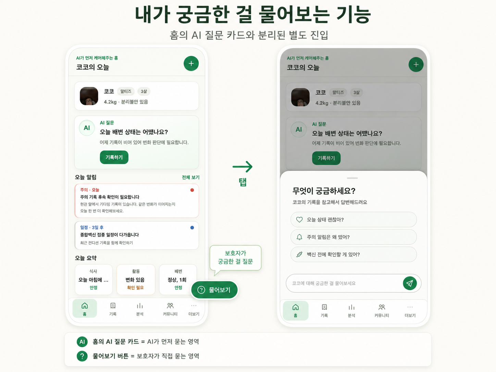
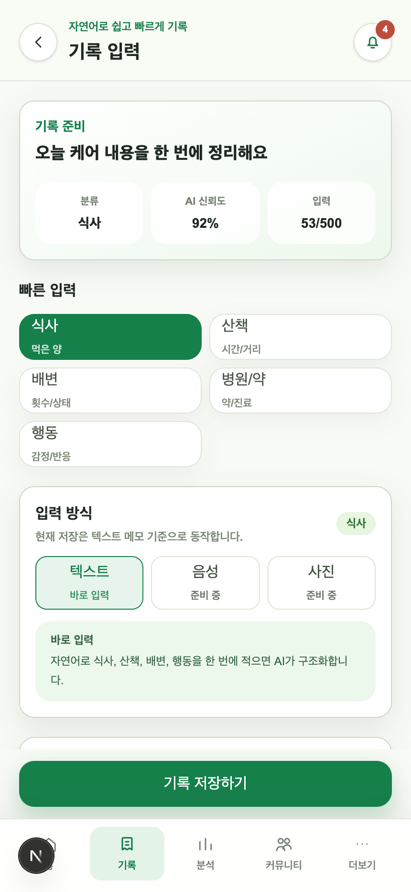
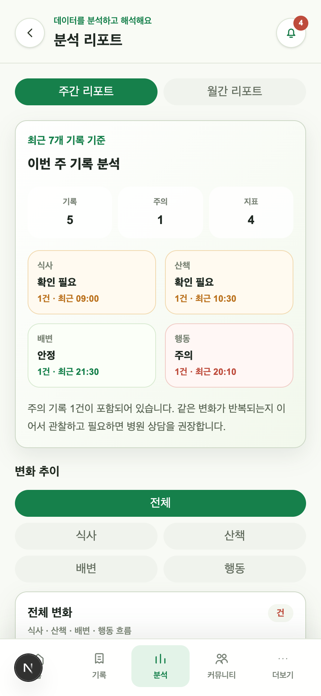
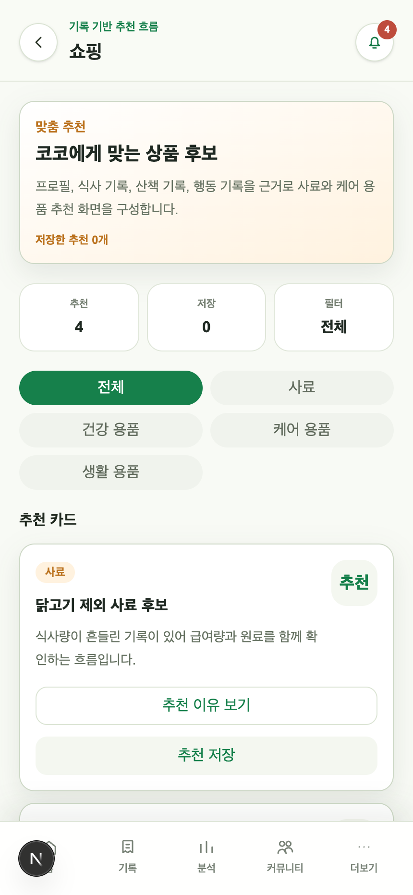
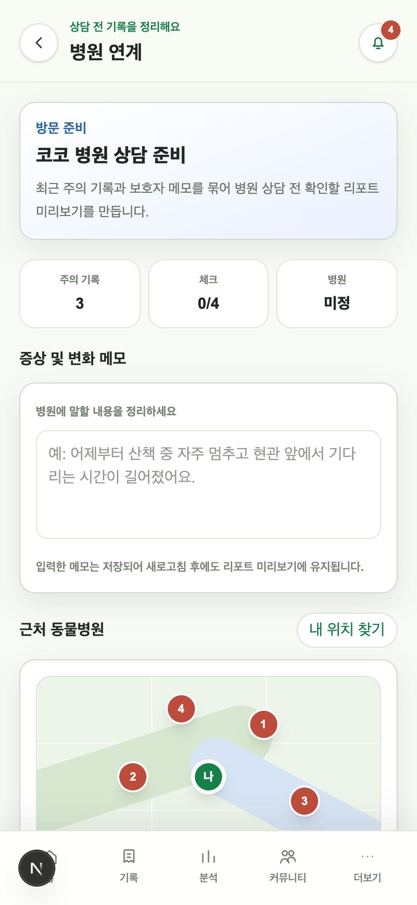
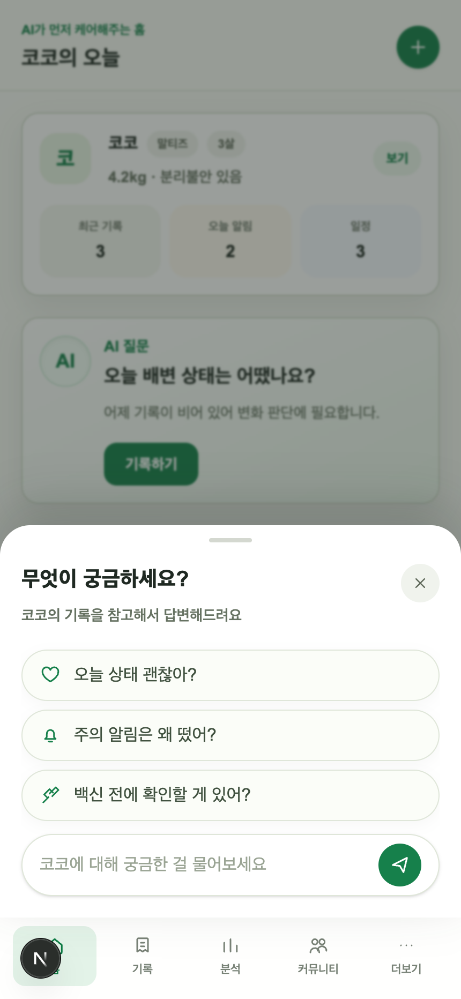
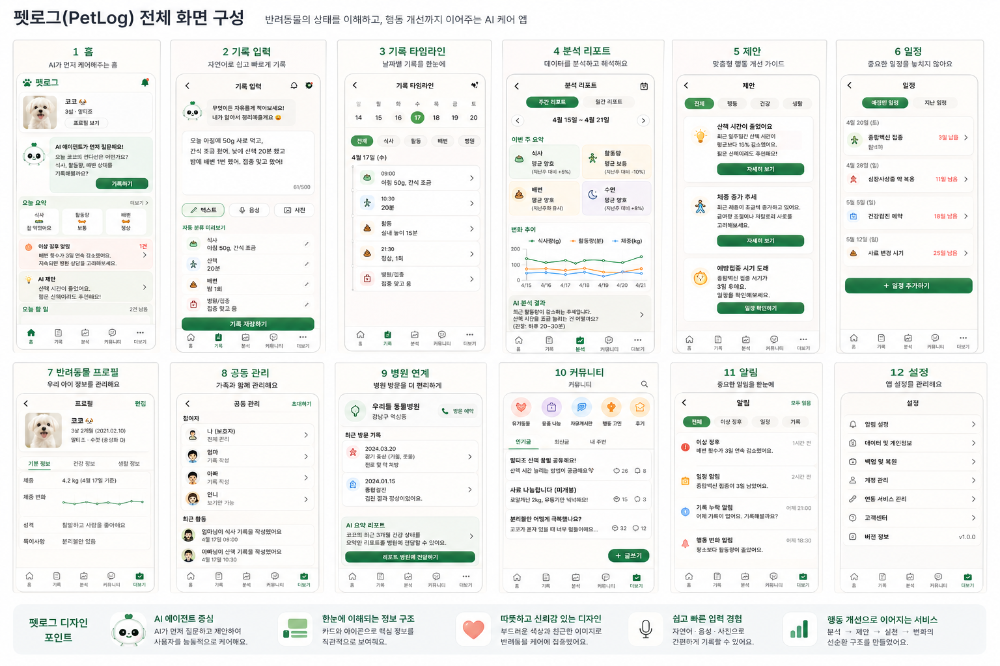
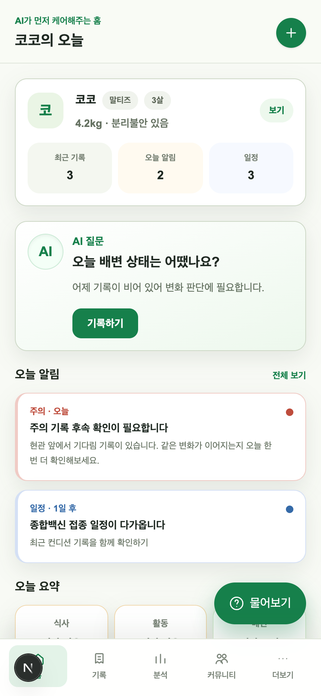
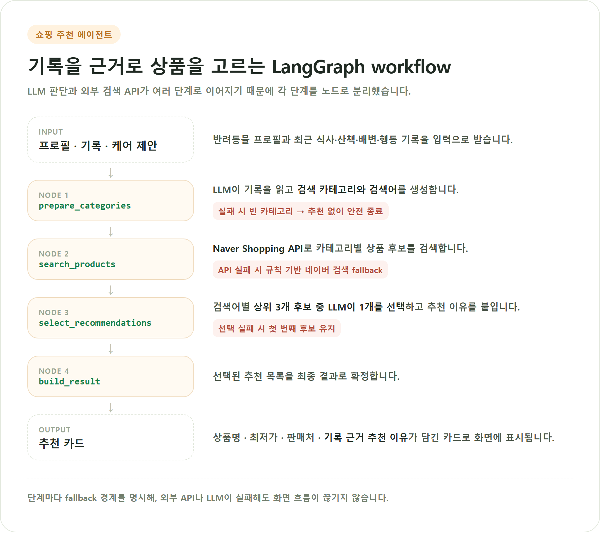
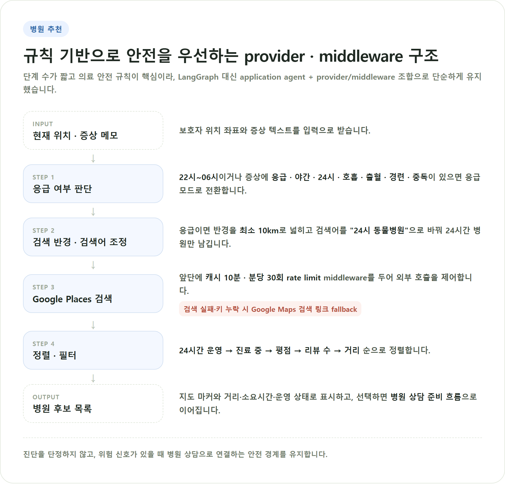

이미지 확대보기
Pet Log (펫로그)는 반려동물의 식사, 배변, 산책, 병원 기록을 말하듯 편하게 적거나 음성으로 남기면 AI가 항목별로 정리해 주는 서비스입니다. 기록 한 건만 보는 대신 최근 기록 흐름을 함께 보고, 주의가 필요한 변화 안내, 행동 개선 제안, 일정 알림, 맞춤 상품 추천, 동물병원 찾기까지 보호자가 다음 행동을 정하도록 돕습니다.
반려동물 앱은 많지만 대부분 캘린더나 기록장처럼 '저장'에서 끝납니다. 기록이 쌓여도 보호자가 직접 해석해야 하니 꾸준히 쓰기 어렵습니다.
음성은 Whisper로 글자로 바꾸고, 자유롭게 쓴 문장은 LLM이 항목·수치·신뢰도로 정리합니다. 저장 전에 정리된 결과를 미리 보고 고칠 수 있습니다.
한 번 묻고 끝나는 대화가 아니라, 프로필과 최근 기록을 함께 보고 식사량·산책·배변·행동의 변화와 빠진 기록을 찾아 알림과 제안으로 연결합니다.
병명을 단정하거나 처방하지 않고 병원 상담을 권하도록, '위험 신호 판단'과 '행동 제안'을 서로 다른 에이전트로 나눠 역할을 제한했습니다.
4인 팀 프로젝트에서 임경빈이 직접 구현한 범위입니다. 백엔드, AI Agent, 외부 API 연동을 맡았습니다.
SQLite 연결과 초기 데이터(seed)를 구성하고, 반려동물·기록·일정 저장소(repository)를 실제 DB에 연결했습니다.
Naver Shopping 상품 추천과 Google Places 동물병원 추천을 구현하고, API가 실패해도 화면이 멈추지 않도록 대체 결과·캐시·호출 횟수 제한을 붙였습니다.
게시판·게시글·댓글·반응 API와 저장소를 만들고, Next.js 커뮤니티 화면을 실제 API에 연결했습니다.
프로젝트 종료 후 쇼핑 추천을 카테고리 준비 → 상품 검색 → 후보 선택 → 결과 생성의 LangGraph 4단계로 나눠, 단계별로 테스트할 수 있게 고쳤습니다.
DB, 커뮤니티, 쇼핑, 병원 추천에 대해 단위·HTTP·스모크 테스트를 작성해 정상 동작과 실패 상황을 함께 검증했습니다.
Next.js 16으로 만든 모바일 우선 웹 화면과 백엔드 AI 에이전트가 함께 동작하는 주요 흐름입니다. (이미지를 누르면 크게 볼 수 있습니다)
앱을 열면 오늘의 식사·활동·배변 요약과 알림, 다가오는 일정이 먼저 보입니다. 기록이 비어 있으면 AI가 먼저 질문 카드를 띄우고, 궁금한 점은 '물어보기' 버튼으로 바로 질문할 수 있습니다.

🔍 클릭하여 확대보호자가 평소 말투로 적거나 음성으로 남긴 기록을 AI가 식사, 산책, 배변, 병원/약, 행동 같은 항목과 수치로 나눠 정리합니다.

🔍 클릭하여 확대식사, 산책, 배변, 행동 기록을 주간·월간 단위로 모아 항목별 상태(안정·확인 필요·주의)와 변화 추이 그래프로 보여줍니다.

🔍 클릭하여 확대인기 상품 순위가 아니라 반려동물 프로필과 최근 기록을 바탕으로 Naver Shopping에서 상품을 찾고, LLM이 "왜 이 상품인지" 추천 이유를 붙여 보여줍니다.

🔍 클릭하여 확대Google Places로 현재 위치 근처 동물병원을 찾아 지도에 표시하고, 병원에 가기 전 최근 주의 기록과 보호자 메모를 묶은 상담 준비 리포트 미리보기를 만들어 줍니다.

🔍 클릭하여 확대"오늘 상태 괜찮아?", "백신 전에 확인할 게 있어?"처럼 물으면 반려동물의 최근 기록을 참고해 답합니다. 반려동물이 직접 말하는 듯한 대화 모드도 있습니다.

🔍 클릭하여 확대



프론트엔드와 백엔드의 역할을 나누고, 백엔드의 핵심 로직이 웹 프레임워크(FastAPI)나 DB, OpenAI SDK 같은 외부 라이브러리에 직접 묶이지 않도록 계층을 나눴습니다.
domain과 application 계층에는 FastAPI, OpenAI SDK, DB 드라이버를 직접 import하지 않는다는 규칙을 두고, 이를 rg 명령으로 검사해 위반이 생기면 바로 드러나게 했습니다.
DB나 LLM 구현체는 infrastructure에 두고 시작 시점에 주입하므로, 모델이나 저장소를 바꿔도 상위 코드는 그대로 둘 수 있습니다.
(단, 단계 흐름을 그래프로 정의하기 위해 LangGraph는 application의 파이프라인에서 사용합니다.)
기능마다 사용할 모델을 환경변수로 정하고(기본 GPT-5-mini), 타임아웃·호출 한도 초과·서버 오류가 나면 예비 GPT 모델 → Gemini → 로컬 Gemma(Ollama) 순서로 자동으로 넘어갑니다. 모델 이름만 바꾸면 로컬 Gemma를 기본 모델로 쓸 수도 있고, 서버 시작 시 Ollama 실행과 모델 미리 불러오기를 자동으로 처리합니다.
| 영역 | 기술 / 라이브러리 | 버전 | 쓰임새 |
|---|---|---|---|
| Frontend | Next.js, React, TypeScript | 16.2.4 / 19.2.5 | App Router 페이지, API 프록시(Route Handler), 타입 검사 |
| UI | Tailwind CSS | 4.x | 모바일 우선 화면 스타일링 |
| Frontend 테스트 | tsx --test, Playwright | 4.21 / 1.59.1 | 단위 테스트(스프린트 1~19), 모바일 화면 점검과 기록 입력 E2E |
| Backend | Python, FastAPI, Uvicorn | 3.12+ / 0.136.1 | REST API 서버, Pydantic 요청·응답 검증 |
| Agent | LangGraph, LangChain | 1.1+ / 1.0+ | 기록 파이프라인·쇼핑 추천의 단계 흐름(StateGraph), Tool·Middleware 연결 |
| AI / LLM | GPT-5-mini, Gemini 2.0 Flash, Gemma 4 (Ollama), Whisper | Cloud & Local | 기록 정리, 케어 답변, 추천 이유 생성, 음성 → 글자 변환(STT) |
| Storage | SQLite, ChromaDB | - | 기록·일정·알림·커뮤니티 저장 / 케어 지식 벡터 검색 |
| External APIs | Naver Shopping, Google Places, Tavily | REST API | 상품 검색, 주변·24시 동물병원 검색, 케어 지식 웹 검색 |
| Deploy | Azure App Service | - | 프론트·백엔드 패키징/배포 스크립트 준비 |
프롬프트 하나에 모든 일을 맡기지 않고, 기록 정리·분석·위험 판단·제안·알림·추천을 각각 다른 Agent가 맡도록 나눴습니다. LangGraph는 단계가 길고 중간에 갈림길이 있는 흐름(기록 입력 파이프라인, 쇼핑 추천)에만 쓰고, 짧은 흐름(병원 추천)은 일반 코드로 두었습니다.
여기서 두 갈래로 나뉩니다.
자유롭게 쓴 문장에서 항목, 제목, 내용, 수치, 신뢰도, 확인 필요 여부를 뽑아 저장할 수 있는 형태로 정리
최근 기록을 보고 반복 행동, 상태 변화, 빠진 기록을 찾고 관련 화면으로 이동할 경로까지 제안
위험 신호 여부만 판단하고 행동 제안은 하지 않음. 판단은 교체 가능한 정책 객체(RiskSignalPolicy)에 맡기며, 연결 구조는 완성했고 판정 규칙은 최소 구현 상태
분석 결과를 바탕으로 산책량 조절, 식사 확인 같은 행동 개선 가이드와 건강 관리 제안 생성
예방접종, 약 복용, 건강검진, 사료 변경 시기에 맞춘 리마인더 계획
기록 누락·위험·행동 변화·일정 4가지 알림 후보를 만들고, 같은 알림이 반복되지 않게 중복 제거 후 읽음 처리까지 연결
LangGraph 4단계(카테고리 준비 → 상품 검색 → 후보 선택 → 결과 생성)로 Naver Shopping 상품을 찾고 LLM이 추천 이유 작성
응급 표현이나 심야 시간이면 반경 10km·24시 병원 우선으로 바꿔 Google Places에서 검색. 단계가 짧아 LangGraph 없이 일반 코드로 구현
반려동물 프로필(이름, 성격, 나이)과 최근 기록을 반영해 반려동물이 직접 말하는 듯한 대화 응답 생성
질문과 비슷한 케어 지식을 벡터 검색으로 찾아 반려동물의 최근 기록과 함께 넣고 답변 생성
Agent가 할 수 있는 일을 제한하기 위해 읽기 도구(get_pet_profile, list_recent_records)와 쓰기 도구(save_pet_record)를 나누고, 파이프라인 단계마다 필요한 미들웨어만 붙였습니다.
AI가 근거 없이 지어내는 답변을 줄이기 위해, 웹에서 찾은 케어 정보를 LLM이 한 번 걸러낸 뒤 저장해 두고 질문할 때 꺼내 쓰는 구조를 만들었습니다.
외부 API와 LLM은 언제든 실패할 수 있다는 전제에서, 서비스가 계속 동작하도록 경계를 정한 3가지 사례입니다.
쇼핑 추천은 Naver Shopping API와 두 번의 LLM 판단에 기대고, 병원 추천은 Google Places에 기댑니다. API 키 누락, 호출 한도 초과, 타임아웃, 결과 0건 등으로 언제든 실패할 수 있습니다. 그런데 쇼핑 추천은 기록 저장과 같은 요청 안에서 save_records → suggest_care → recommend_shopping 순서로 실행되어, 추천 한 단계가 실패하면 요청 전체가 500 오류가 됐습니다. 기록은 이미 저장됐는데 화면에는 실패로 보여 다시 누르면 같은 기록이 두 번 저장될 수 있었습니다.
Agent마다 try/except를 흩어 두면 어떤 실패가 어디서 처리되는지 알기 어렵습니다. 그래서 코드를 쓰기 전에 "실패 지점마다 무엇을 돌려줄지"를 표로 먼저 정했습니다.
예: 카테고리 생성 실패 → 빈 추천, 후보 선택 LLM 실패 → 첫 번째 후보 유지, LLM이 후보에 없는 상품을 고르면 → 첫 번째 후보로 대체, Google Places 실패 → Google Maps 검색 링크 1건, 호출 한도 초과 → 오류 대신 빈 결과.
1. 이 정책을 Agent 본문이 아니라 API 호출부를 감싸는 미들웨어 체인(대체 결과 → 캐시·호출 제한 → 실제 API)에 두어 계층마다 역할을 하나씩만 맡겼습니다.
2. API 키가 없어도 서버가 정상 실행되고, 병원·쇼핑 화면은 오류 대신 쓸 수 있는 대체 결과를 보여줍니다.
3. 같은 위치 반복 조회는 10분 캐시로 외부 호출 1회로 줄이고, 1분당 30회로 호출을 제한했습니다. Naver 호출은 타임아웃 3초, LLM에는 상위 3개 후보만 전달합니다.
4. 정상·실패 경로를 테스트 19개(쇼핑 11, 병원 8)로 나눠 검증했습니다.
모든 기능을 그래프로 만들면 기술은 통일되지만, 단순한 흐름까지 상태 타입·노드·연결을 정의해야 해서 코드가 길어지고 흐름이 여기저기 흩어집니다. 무엇보다 "왜 LangGraph를 썼나요?"라는 질문에 "요구사항이라서"밖에 답할 수 없게 됩니다.
기준을 "상태가 단계별로 바뀌는 흐름인가"로 정하고, 다음 셋 중 둘 이상일 때만 쓰기로 했습니다.
① 단계가 3개 이상이고 앞 단계 결과에 의존한다 ② 중간에 조건에 따라 갈라진다 ③ 단계별 중간 상태를 따로 보거나 테스트할 가치가 있다.
1. 적용 ① 기록 입력: 위험 판단 뒤 '미리보기'와 '저장'으로 갈라지는 흐름이라 그래프로 만들었고, 두 갈래를 테스트 7개로 나눠 검증했습니다.
2. 적용 ② 쇼핑 추천: 4단계 노드 경계가 시행착오 01의 실패 정책 경계와 그대로 맞아떨어졌습니다.
3. 미적용: 병원 추천 — 응급 판단 → 반경 조정 → 검색 → 정렬이 갈림길 없는 한 줄 흐름이라 일반 코드로 두었습니다. 처음엔 그래프로 만들려다 노드 3개가 단순 대입뿐인 것을 보고 되돌렸습니다.
구토, 혈변, 호흡 이상처럼 건강과 직결된 기록을 다룹니다. LLM이 "위염일 가능성이 높습니다"처럼 그럴듯하게 답하면 보호자가 병원 방문을 미룰 수 있습니다. 반대로 건강 질문을 모두 피하면 서비스의 의미가 없어집니다.
문제는 모델 성능이 아니라 AI의 역할이 '판단하는 주체'인지 '판단을 돕는 도구'인지 흐릿한 것이었습니다. 프롬프트 문장만으로 막으면 모델을 바꿀 때마다 무너지므로, 경계를 코드 구조로 강제하기로 했습니다.
1. 위험 판단(RiskDetectionAgent)과 행동 제안(SuggestionAgent)을 다른 Agent로 나눠, 한 Agent가 "위험하다 + 이렇게 하라"를 함께 말하지 못하게 했습니다.
2. 확신이 낮은 기록은 needs_confirmation으로 저장 대신 미리보기로 보내고, 응급 표현·심야 시간의 병원 검색은 LLM이 아닌 명시적 규칙으로 처리했습니다.
3. 같은 위험 알림은 중복 제거 키로 반복 노출을 막았고, 이 경로를 테스트 8개로 검증했습니다.
한계: 위험 판정 정책(RiskSignalPolicy)은 연결 구조까지 완성했지만 판정 규칙은 최소 구현 상태로, 규칙 채우기가 다음 과제입니다.
감에 의존하지 않도록 단계별 검토 절차를 두고, 자동 테스트로 기능과 계층 규칙을 확인했습니다.
AI 코딩 도구에 기획자 → UX 설계 → AI Agent 설계 → 구현 계획 → QA 리뷰 역할을 나눠 맡기고, 각 단계의 결과 문서를 다음 단계가 이어받아 검토하는 방식으로 MVP 범위를 정했습니다.
백엔드는 unittest 기반 테스트 265개(39개 파일)로 정상 경로와 실패 경로를 나눠 검증합니다. 프론트엔드는 tsx --test로 스프린트 1~19 기능별 테스트를 포함한 단위 테스트를 돌립니다.
375px·430px 두 가지 모바일 화면에서 주요 7개 페이지를 열어 가로 스크롤이 생기지 않는지, 콘솔 에러가 없는지 자동으로 확인하고, 기록 입력 흐름은 E2E로 검증합니다.
"application·domain 계층은 FastAPI, OpenAI SDK, DB 드라이버를 직접 쓰지 않는다"는 규칙을 문서로만 두지 않고 rg 검색 명령으로 만들어, 출력이 없어야 통과하도록 했습니다.
프론트엔드는 lint, typecheck, build로 함께 확인합니다. 실행 방법과 환경 설정은 같은 폴더의 포트폴리오 구동 가이드 문서에 정리했습니다.
만든 결과물과 잘한 점, 아쉬운 점을 정리합니다.
"LLM 호출을 try/except로 감싸면 된다"고 생각했지만, 중요한 건 예외를 잡는 게 아니라 실패 지점마다 무엇을 돌려줄지 정하는 일이었습니다. 이걸 표로 정하고 나서야 실패 상황별 테스트를 나눌 수 있었습니다.
건강 도메인에서는 "AI가 무엇을 말할 수 있나"보다 "무엇을 말하면 안 되나"를 먼저 정해야 했습니다. 그 경계는 프롬프트가 아니라 Agent 분리와 정책 객체 같은 구조로 강제해야 지켜졌습니다.
정리 정확도, 응답 시간, 실패율 같은 품질 지표를 처음부터 재지 못해 프롬프트 변경 효과를 숫자로 말하기 어렵습니다. 다음에는 대표 입력 30~50건의 평가 세트를 먼저 만들고, 위험 판정 규칙도 구조와 함께 채우겠습니다.